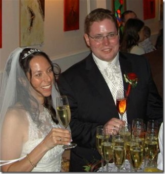

Last weekend two of my best friends got married within a wonderful wedding in Altenburg close to Horn... the Austrian's would say "in the good old wood quarters". Tanja and Dominik finally took the challenge for the...most beautiful project we can start in our life:)
You might wonder why I am adding a post like this to my geeky web blog and wonder how a wedding fits into this blog which is mostly just a view on Microsoft's world and technologies and experience from sessions, conferences and all that stuff... well maybe more than you think because alongside my parents and grand parents Dominik and Tanja are the most important persons in my life... and without knowing them I wouldn't where I am, today.
{kind=link}
I still remeber as it just was yesterday although it is nearly a decade ago - about a year after we finished our college in summer Dominik was the one asking me weather I want to join a company based in lower Austria focussed on banking projects. In that summer I signed the contract and some time later that brought me to one of the most interesting and important projects in my life. This project at the Austrian Nations bank layed the foundation for the ways I am thinking today. I met some of the key people for my professional career and although it took some time and some projects before I joined Microsoft, this question from Dominik and the decision to join this company (called Langsteiner EDV) was the very first step for anything that happened afterwards. A long journey took us all from then to now... many things changed in the meantime, everyone of us toke many completly different challenges - and we took them all together.
Some time ago Harald (our manager) & I discussed a little bit on our work and he asked where I take the power for doing so many different things... and this is the answer - it is my family and especially my friends giving me that power. Tanja and Dominik played a key role in helping me to find my ways for many things done so far - especially those which have to do nothing with work and which are even harder to manage:)... many Sunday evenings where we talked about the feelings that are not as easy to control as a project... I think they know what I am writing about:)). And the most important thing: together with all our friends they always helped me to "logoff" sometimes and forget about work and technologies. And... all of them played an important role at their wedding - the "best man" Edi, the masters of photographing Michi&Michi, the dailyWedding publishers Ralph and Gerlinde (maid of honor for Tanja)... they where all there and together we are just a fabulous team! I'll never ever miss one of them... Finally on such weekends I get remembered that there are more important things than work and technology, although I love my job and do it with all the passion I have. That's what I got reminded to when being at Tanja & Dominiks wedding. Maybe some of you know and understand now, why I am still here in Austria and not across the ocean, yet (just a few who are reading this might know what I am talking about)...
Tanja, Dominik - I wish you all the best with all my heart and I am looking forward to even more great moments with you together!
Mario